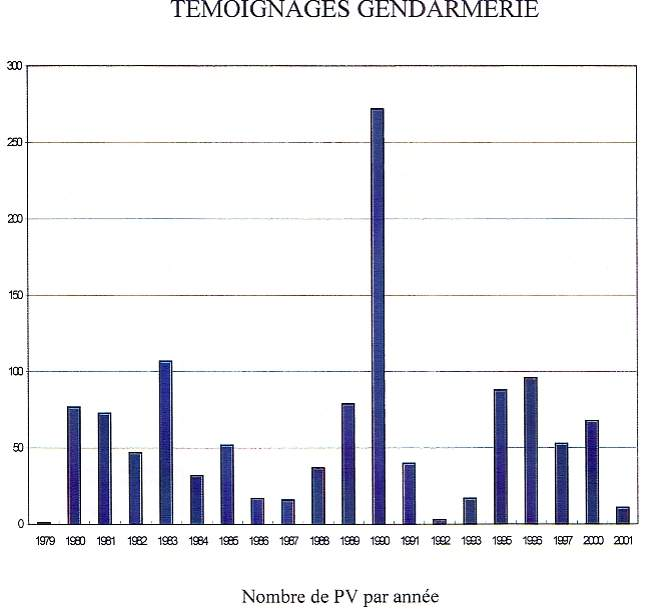
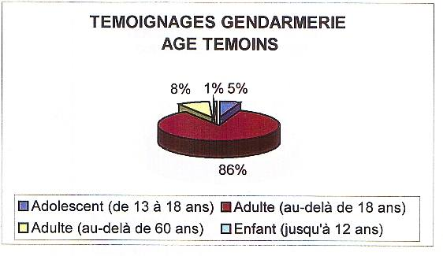
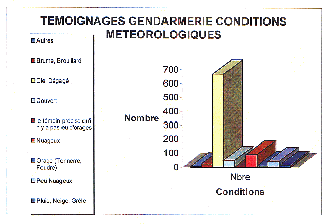

Aussi loin que l'on remonte dans le temps, des hommes ont observé dans le ciel des phénom&egé inexpliqués, à caractère souvent lumineux, qu'ils ont représentés ou d&eéits en foncéleur environnécioculturel, avec la plupart du temps une connotation religieuse.
Depuis une cinquantaine d'années, plus précisément depuis l'apparition du terme "soucoupe volante" dans les premières descriptions détaillées rapportées par un pilote américain, les témoignages d'apparitions d'ovnis (OVNI : Objet Volant Non Identifié) se sont multipliés dans le monde entier, avec des pics d'activité dans certaines zones géographiques et à certaines époques (phénomène dit de "vagues", dont on ne sait pas vraiment distinguer la nature objective ou médiatique). Une caractéristique importante de ces témoignages est leur grande cohérence : les descriptions rapportées par un industriel américain concorderont avec celles d'un paysan illettré chinois. Au cours du demi-siècle écoulé, ces phénomènes non-identifiés (par leurs témoins) ont été presque systématiquement associés, aux yeux du grand public et des médias, à la venue sur Terre de visiteurs extraterrestres à l'attitude amicaléférente ou hostileées cas.
Il faut souligner que dans les mots constitutifs du sigle OVNI, les 2 premiers sont discutables : si certains témoignages évoquent bien un "objet" matériel, d'apparence parfois métallique, beaucoup d'autres évoquent davantage un phénomène, le plus souvent lumineux. Quant au terme "volant", il est restrictif dans la mesure où certains témoignages OVNI décrivent des phénomènes au sol ou, à l'opposé, dans l'espace. Le CNES a adopté une terminologie plus adéquate, en parlant de Phénomènes Aérospéon-identifiés (PAN)
Avant de proposer une définition du problème à éé il est utile de rappeler ce dont il ne s'agit pas. En effet, l'objectif premier n'est pas de vérifier si oui ou non notre planète est visitée par des extraterrestres. Malgré la confusion entretenue par les médias et la littérature sensationnaliste, le problème OVNI n'a a priori rien à voir avec les programmes SETI (recherche d'intelligences extraterrestres). Une 2ᵉ erreur, fréquemment commise, consisterait à ne vouloir enéa priori que 2 attitudes possibles : soit tout rejeter en bloc, en montrant que tous les témoignages sont explicables, soit ramener l'ensemble des cas non résolus à une explication unique et universelle, quelle qu'elle soit (phénomènes atmosphériques, problèmes de psychologie de la perception, viséxtraterrestres, expérimentations militaires...).
La solution du problème que posent les témoignages de PANs (l'existence de ces témoignages est, quant à elle, incontestable) devrait idéalement consister à apporter une explication appropri&é pour chacun d'eux, fusées toutes différentes. On sait déjà par expérience qu'au prix d'un effort limité d'investigation, on apporte à la grande majorité de ces témoignages une explication conventionnelle simple et définitive : corps céleste observé dans des conditions inhabituelles, phénomène atmosphérique rare, rentrée atmosphérique d'un débris spatial, engin scientifique ou militaire incégrand public, incident technique (reflet parasite dans optique, anomalie de propagation radar), supercherie montée par le témoin ou à ses dépens, etc.
La logique d'une étude méthodique des témoignages de PAN peut être décomposée en 4 étapes :
Dans cette optique, la mission d'un service chargé du dossier des PAN peut être organisée autour des 3 fonctions techniques suivantes, correspondants à des niveaux d'investigation croissants :
Une caractéristique importante des 2 premières fonctions est qu'en ce qui concerne les événements qui restent inexpliqués, elles n'impliquent aucune tentive d'interprétation.
L'étude des PANs, depuis une cinquantaine d'années, fait presque exclusivement l'objet d'initiatives privées : individus, groupes, associations, etc. Leur taille, leur durée de vie et leur niveau de sérieux et de compétence sont extrêmement variables, mais une immense majorité de ces démarches relève davantage du loisir ou de la croyance que de la recherche objective d'explications vérifiées.
Sur le plan officiel, nous laisserons de côté lébles (probables) implications de services de renseignement de certains pays (notamment des Etats-Unis), dont l'activité est, par définition, couverte par le secret. Il n'y a aucune information utile à attendre de ce côté-là, d'autant moins que c'est dans éne que prolifèrent le plus les démarches irrationnelles des tenants d'une grande conspiration du silence ("On nous cache tout") : voir l'affaire de Roswell.
La France est le premier pays à avoir créé, , un service officiel ouvert chargé de la collecte d'informations sébservations de PAN et de leur analyse : le GEPAN. Cette initiative est quasiment unique au monde.
Aux Eté, seule l'armée de l'air s'est ouvertement intéressée aux PANs depuis la fin des années 1940s, avec pour principal souci d'éviter les possibles effets de panique collective pouvant découler des nombreuses histoires de soucoupes volantes qui défrayaient alors la chronique.
Le premier rapport scientifique officiel sur la question, commandité par l'armée de l'air, a été publié par le Dr. Edward U. Condon, directeur du projet Colorado. Bien que le corps du rapport Condon fasse état d'un grand nombre de phénomènes restés inexpliqués après expertise, ses conclusions officielles sont totalement négatives, n'ouvrant aucune perspective de progrès des connaissancétifiques à partir de l'étude des observations de PAN.
, la fondation Rockefeller a pris l'initiative
d'un colloqét à faire le point sur le thème des traces
physiques associées aux observations de PAN (voiréphe 2.2).
Une question a été transmise de la part du GEPAN à l'ambassade d'URSS à Paris , à laquelle une réponse officielle au CNES est revenue , confirmant que l'Académie de scieces d'URSS était bien engagée dans des études sur les phénomènes aérospatiaux anormaux, avec des orientations proches de celles du GEPAN. Cette réponse invitait la France, si elle le désirait, à coopérer sur ce sujet, en désignant l'organisme soviétique concerné et le correspondant à contacter : l'institut IZMIRAN (Magnétisme de la Terre, de l'ionosphère et de la propagation des ondes) et M. Migouline.
Cette proposition n'a jamais eu de suite du côté du CNES.
Aucun pays européen autre que la France n'a jamais travaillé officiellement sur les témoignages de PAN.
Quelques initiatives individuelles ont cependant été tentées (sans succès) dans le passé : au sein de l'ESA dans les années 1970s, avec les forces aériennes d'Italie et d'Espagne plus récemment. La plus avançée est l'action présentée ci-dessous, entreprise il y a une dizaine d'années parlementaire européen.
, un membre belge du parlement européen (M. di Rupo) a déposé une proposition de résolution (B3-1990/90) visant la création d'un "Centre européen d'observation des ovnis" qui s'appuierait sur les compétences déjà acquises par le SEPRA en France. Ce projet est toujours officiellement en suspens.
a été créé à Santiago du Chili un service officiel civil chargé d'étudier les témoignages sur les ovnis : le CEFAA (Comité de Estudios de Fenomenos Aéreos Anomalos). Rattaché à l'Ecole technique de l'aviation civile chilienne, cette structure est un peu comparable à ce qu'était le GEPAN dans sa phase initiale.
À l'occasion d'un atelier sur le thème des PAN, où le SEPRA avait été invité dans le cadre du salon FIDAE 2000 en
; Santiago, le président du CEFAA (Général de brigade aérienne Ricardo Bermudez Sanhueza) a adressé
officiellement au CNES une demande visant à l'établissement d'un accord de modération entre le CEFAA et le SEPRA.
Cette demande n'a paésuite positive à ce jour.
Le GEPAN (Groupe d'Etude des Phénomènes Aérospatiaux Non-identifiés) fut créé le à l'initiative du directeur CNES, Yves Sillard (décision n° 135/CNES/DG du ).
La conjoncture était plutôt favorable à l'époque, en raison d'une déclaration qu'avait faite le ministre des Armées sur la nécessité d'étudier sérieusement les ovnis, d'un rapport des anciens de l'IHEDN dont les conclusions allaient dans le même sens et des travaux déjà entrepris à titre privé par un ingénieur du CNES extrêmement actif, Claude Poher.
La mission assignée au GEPAN consistait principalement à élaborer, en liaison avec divers organismes scientifiques, des méthodes d'analyse scientifique des rapports d'observation de PAN collectés et filtrés.
Le GEPAN fut doté des moyens en personnel et du budget qui devaient lui permettre de répondre aux exigences de son conseil scientifique en termes de méthodologie de collecte et de traitement des données, ainsi que d'études spécifiques à lancer.
Pour fixer les orientations et suivre activités du GEPAN, un Conseil Scientifique fut mis en place dès sa création, sous la présidence du président du CNES Hubert Curien, regroupant d'éminents spécialistes d'astronomie, météorologie, de physique, de sciences humaines, etc. désingés par le président.
Ce conseil scientifique s'est réuni environ une fois par an durant les premières années, supervisant effectivement la mise en place de méthodologie du GEPAN et lui fixant des axes de recherche concrets (notamment dans le sens d'une approche instrumentale de la surveiéu ciel). Après 8 ans d'interruption, il tint une réunion de clôture (la 7ᵉ) , dont le compte-rendu (n° 57.92/DG/IG) était accompagné d'un rapport final (Bilan 1977-1988).
Après une phase déxpansion, avec des effectifs atteignant 7 personnes à temps plein, y compris un chercheur, le GEPAN fut ramené à une taille et à des fonctions plus modestes (3 personnes, suppression des études) par décision (n° 19/CNES/DG du 11 février 1983) du nouveau directeur général, Frédéric d'Allest.
5 ans 1/2 plus tard, le GEPAN fut dissous (décision n° 104/CNES/DG du 25
novembre 1988) et le directeur du CST, Jean-Jacques
Sussel, le remplaça aussitôt (décision n° 388/CST/D) par le SEPRA
(Service d'Expertise des Phénomènes de Rentrées Atmosphériques), chargé duées rentrées atmosphériques ainsi
que du recueil et du prétraitement des données relatives aux PAN. À cette occasion, les moyens furent à nouveau
réduits (2,5 personnes).
, la décision fut prise au CST de supprimer le suivi des rentrées atmosphériques de la mission du SEPRA (rebaptisé pour l'occasion Service d'Experé Phénomènes Rares Aérospatiaux), dont la misséit se recentrer sur la collecte d'informations relatives aux observations de PAN et sur la constitution d'une base de données de témoignages.
L'histoire du GEPAN et du SEPRA peut être présentée comme la succession de 3 phases qualitatives, indépendamment des variations quantitatives de ses moyens :
En tout état de cause, l'expérience acquise par le CNES au sujet des PANs depuis 24 ans et les archives qu'il a accumulées sont uniques au monde.
Le GEPAN a travaillé essentiellement sur les axes suivants : collecte d'information, méthodologie d'investigation, enquêtes sur des cas significatifs, études de fond sur des thèmes particuliers.
Pour réaliser la collecte d'information, le GEPAN a mis au é certain nombre de protocoles avec des administrations susceptibles de lui fournir des données sur les observations ou enregistrements de PAN : gendarmerie nationale, police nationale, aviation civile, armée de l'air. Ces protocoles sont toujours en vigueur et seules les observations rapportées à travers des voies institutionnelles ont été prises en compte à ce jour.
La méthodologie de collecte d'information mise au point par le GEPAN, symbolisée par un tétraèdre (cf. ci-contre), a permis d'aborder la recherche d'identification du stimulus (origine réelle de l'observation) en tenant compte à la fois du contenu sémantique du témoignage, du témoin lui-même (aspects physiologiques et psychologiques), de l'environnement (enregistrements, traces, météo, données astronomiques) et de l'environnement psychosocial (contexte social et culturel, éventuelle action des médias).
Les cas simples à expliquer ou pauvres en information exploitable (la majorité) ont été traités à l'aide de "mini-enquêtes" effectuées sans se déplacer, tandis que les cas les plus significatifs ont fait l'objet de véritables enquêtes sur le terrain, suivies d'expertises techniques. Pour mener à un niveau professionnel ces enquêtes approfondies, par nature variées et pluridisciplinaires, le GEPAN a dû créer des liens avec divers laboratoires et consultants extérieurs, couvrant ainsi tous les domaines de compétence mis en jeu (physique des sols, hyperfréquences, biochimie, photographie et traitement d'image, radar, astronomie, etc.). Quelques enquêtes particuliérement riches en informations quantifiées ont fait l'objet de publications techniques (voir paragraphe 1.3.7).
Le conseil scientifique a par ailleurs suggéré que soient initialisés certains travaux de R&D, que le GEPAN a parfois sous-traités à des intervenants extérieurs. À titre d'exemples : études d'une modélisation de la propulsion par MHD, étude sur l'état de l'art des systèmes et technologies existant dans le monde susceptibles de fournir des données pertinentes en matière de surveillance du ciel, synthèse sur les méthodes d'analyse des documents photographiques, etc.
Un acquis indiscutable du GEPAN/Sé l'ensemble des données collectées à travers les voies instéelles, qui ne reméas seulement au démarrage du GEPAN , mais de fait jusqu'aux années 1950s (avec notamment tous les rapports de gendarmerie de l'année , la plus dense en observations de PAN en fréquence
La mise en foéa base de données de témoignages du SEPRA est très avancée. Elle est organisée en deux volets : d'une part tous les és errestres issus de la gendarmerie et de la police, d'autre part tous les cas "aééues" issus de l'aviation civile et de l'armée de l'air.
Son mode de codage permet, en particulier, se préserver la tracé abulaireé à chaque témoin, préservant ainsi la possibilité d'une approche psychosociale.
Les résultats présentés ci-dessous sont extraits de la base de données d tat actuel d'avancement (saisie, sur la période de PV de gendarmerie, représentant 2700 témoignages, et de 92 PV aéroné). Il reste actuellement en archive environ 3000 autres témoignages à saisir, couvrant la période de . Au rythme actuel (un opérateur extérieur; mi-temps), leur saisie dans la base de données pourrait être réalisée en 2 ans.
Les graphiques suivants illustrent, successivement pour le volet terrestre et pour le volet aéronautiquébase de données, les nombres de PV reçus par année, les répartitions statistiques de quelques paramètres caractéristiques des témoignages et la pré classification des cas dans les 4 catégories standard :
Il est à noter que, pour les 2 volets, le pourcentage de phénomènes de classe D (non identifiés malgré la
disponibilité de données) est à peu près le même : environ 10%.


